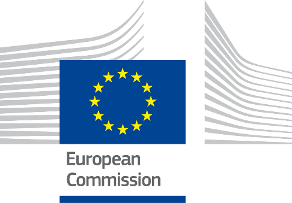

ISA2
ISA2
Digital Public Administration factsheet 2020
Sweden
 Table of Contents
Table of Contents2 Digital Public Administration Highlights 9
3 Digital Public Administration Political Communications 12
4 Digital Public Administration Legislation 19
5 Digital Public Administration Governance 25
6 Digital Public Administration Infrastructure 32
7 Cross-border Digital Public Administration Services for Citizens and Businesses 38
Country
Profile
1
Population: 10 230 185 inhabitants (2019)
GDP at market prices: 474 683.3 million Euros (2019)
GDP per inhabitant in PPS (Purchasing Power Standard EU 27=100): 120 (2019)
GDP growth rate: 1.2 % (2019)
Inflation rate: 1.7 % (2019)
Unemployment rate: 6.8 % (2019)
General government gross debt (Percentage of GDP): 35.1 (2019)
General government deficit/surplus (Percentage of GDP): 0.5 (2019)
Area: 438 576 km2
Capital city: Stockholm
Official EU language: Swedish
Currency: Swedish krona SEK
Source: Eurostat (last update: 26 June 2020)
The following graphs present data for the latest Digital Public Administration Indicators for Sweden compared to the EU average. Statistical indicators in this section reflect those of Eurostat at the time the Edition is being prepared.
Percentage of individuals using the internet for interacting with public authorities in Sweden | Percentage of individuals using the internet for obtaining information from public authorities in Sweden |
| |
Percentage of individuals using the internet for downloading official forms from public authorities in Sweden | Percentage of individuals using the internet for sending filled forms to public authorities in Sweden |
| |
In 2017, the European Commission published the European Interoperability Framework (EIF) to give specific guidance on how to set up interoperable digital public services through a set of 47 recommendations. The picture below represents the three pillars of the EIF around which the EIF Monitoring Mechanism was built to evaluate the level of implementation of the EIF within the Member States. It is based on a set of 68 Key Performance Indicators (KPIs) clustered within the three main pillars of the EIF (Principles, Layers and Conceptual model), outlined below.

Source: European Interoperability Framework Monitoring Mechanism 2019
For each of the three pillars, a different scoreboard was created to breakdown the results into their main components (i.e. the 12 principles of interoperability, the interoperability layers and the components of the conceptual model). The components are evaluated on a scale from one to four, where one means a lower level of implementation, while 4 means a higher level of implementation. The graph below shows the result of the first EIF Monitoring Mechanism data collection for Sweden in 2019. It is possible to notice positive results within the first scoreboard (Interoperability principles). The main areas of improvements are distributed between the three scoreboards, and are related to the catalogues, interoperability governance, and assessment of effectiveness and efficiency. Not enough data was collected to measure the principle of inclusion and accessibility.
Source: European Interoperability Framework Monitoring Mechanism 2019
The graph below is the result of the latest eGovernment Benchmark report, which evaluates the priority areas of the eGovernment Action Plan 2016-2020, based on specific indicators. These indicators are clustered within four main top-level benchmarks:
The 2020 report presents the biennial results, achieved over the past two years of measurement of all eight life events used to measure the above-mentioned top-level benchmarks. More specifically, these life events are divided between six ‘Citizen life events’ (Losing and finding a job, Studying, Family life, all measured in 2012, 2014, 2016 and 2018, and Starting a small claim procedure, Moving, Owning a car, all measured in 2013, 2015, 2017 and 2019) and two ‘Business life events’ (Business start-up, measured in 2012, 2014, 2016 and 2018, and Regular business operations, measured in 2013, 2015, 2017 and 2019).

Source: eGovernment Benchmark Report 2020 Country Factsheets
Digital Public Administration Highlights
2
Digital Public Administration Political Communications
Digital first is a principle within the public sector. The Government has made the assessment that digital should be the first choice in the public administration activities and in contacts with private individuals and business. Digital as the first choice means that the public administration, when appropriate, should choose digital solutions when designing its operations. At the same time, the protection of security-sensitive activities, the information security and the protection of personal privacy must be ensured. With this in mind, it should be easy to digitally get in touch with the public Sweden and, if possible, information should only be provided once. Public administration should be effective and collaborate, and re-use information, tasks and common solutions whenever possible and appropriate.
During the last years, the Swedish government increased its focus on interoperability and standardisation. Proof of this are the different government assignments for standardised and interoperable information and data exchange.
In 2016, the Government and the Swedish Association of Local Authorities and Regions (SALAR) agreed on a vision for eHealth. This vision aims to support efforts to make use of the opportunities of digitisation in social services and health care and have decided to endorse a common vision for eHealth up to 2025.
The Swedish government adopted the National Approach to Artificial Intelligence in June 2018. The approach contained key conditions for the use of Artificial Intelligence (AI) in Sweden, in order to achieve the Governments goal to make Sweden a leader in harnessing the opportunities that the use of AI can offer. In January 2020, DIGG released its report “Promoting public administration's ability to use AI”. This report will be available to decision-makers together with the Vinnova (the Swedish Innovation agency) 2018 report “Artificial intelligence in Swedish business and society” and the forthcoming Statistics Sweden’s (SCB) report on charting the use of artificial intelligence and analysis of large amounts of data in Sweden (expected in 2020). These provide a comprehensive overview on the current status of AI in Sweden.
Sweden shares a one-year presidency of the European Blockchain Partnership together with Italy and the Czech Republic. The presidency lasts from July 2019 to July 2020.
Digital Public Administration Legislation
Sweden is complying with the eIDAS Regulation (910/2014) and is preparing to notify a Swedish electronic identification scheme in accordance with the regulation. Pre- notification is planned to start autumn 2020.
The transposition of the Web Accessibility Directive (EU) 2016/2102 in Sweden is implemented by the act SFS 2018:1937 and the accompanying ordinance SFS 2018:1938. The latter assigns regulatory rights to the Agency for Digital Government (DIGG). DIGG published the required regulations MDFFS 2019:2 in May 2019. The regulations assert that the accessibility of the websites and mobile applications of public sector bodies in Sweden shall conform to the requirements set forth in Article 4 of the directive.
Digital Public Administration Governance
In January 2019 the Ministry of Infrastructure was established and the responsibility for digitalisation is coordinated within the Ministry with support from the unit of Digital Government. In 2018, the Agency for Digital Government (DIGG), was established to serve as the hub for digitalisation of the public sector. The primary objective was to improve the coordination of public sector digitisation and support it at the central, regional and local levels. The agency is also responsible for, among other items, eIdentification, eInvoicing, digital post, web accessibility, standardisation concerning data and information exchange.
The eGovernment activities of regions and municipalities are coordinated by the Swedish Association of Local Authorities and Regions (SALAR). The eGovernment strategy of regions and municipalities is based on the same goals as the Swedish government’s eGovernment Strategy.
DIGG is, based on an assignment from the Government, the Swedish National Coordinator for the Single Digital Gateway, as defined in Article 28 of Regulation (EU) 2018/1724.
Digital Public Administration Infrastructure
DIGG is responsible for the application management and development of the Swedish open data. In 2019, the beta version of the data portal was launched. The portal aims to provide easy access to data resources from both private and public sector organisations. Oppnadata.se will remain running until the new portal is fully launched. Measures have been to publish open data and conduct open data-driven innovation.
Two government assignments were issued in May 2018 focusing on establishing the foundation for a more standardised and interoperable national approach to base registries and information exchange. Several key stakeholders were involved in the assignments, including some of the larger government agencies and DIGG, which has the responsibility to coordinate work. In line with the proposals in the reports, two new government assignments started at the end of 2019 with the focus to establish a national basic data framework for basic data in public administration. This framework together with establishing common digital infrastructure for information exchange is to be established in 2021.

Digital Public Administration Political Communications
3
A Sustainable Digitalised Sweden – A Digitalisation Strategy
In May 2017, the Swedish government presented the strategy A Sustainable Digitalised Sweden - A Digitalisation Strategy. The strategy explained how the digitalisation policy contributed to competitiveness, full employment and economically, socially and environmentally sustainable development in the society. The strategy set the focus on the government's digitalisation policy.
To achieve the overall objective of Sweden of becoming a world leader in harnessing the opportunities of digital transformation, the strategy contained five goals:
Digital First – a basic principle
Digital first is a principle applied within the public sector. The government has made the assessment that digital should be the first choice in public administration activities and in contacts with private individuals and business. Digital first means that the public administration, when appropriate, should choose digital solutions when designing its operations. At the same time, the protection of security-sensitive activities, the information security and the protection of personal privacy must be ensured. With this in mind, it should be easy to get in touch digitally with Swedish public authorities. Furthermore, information should only be provided once, if possible. Public administration should be effective and collaborate, and re-use information, tasks and common solutions whenever possible and appropriate.
Putting the citizen at the centre (2012 – present)
The Swedish government strategy for collaborative digital services in government administration, Putting the Citizen at the Centre, was launched in December 2012. This strategy described how the Swedish government planned to further strengthen the ability of government agencies to work together in delivering digital services. More common digital services in the daily lives of both citizens and businesses have been further simplified. These digital services shall be developed in a user-centric way: simple, secure to use and easily accessible to everyone. Innovation has been enhanced by making it easier to find and use re-usable public information and digital services with interfaces that can be operated by other systems. The publication of public sector information on the internet and the use of social media have promoted both transparency and citizen involvement. Quality and efficiency in government administration have been increased through standardised information management, better information security and digitised processes. Such internal efficiency in developing digital services must always be conditional to the protection of personal privacy and the need for confidentiality. The above-mentioned objectives have formed the basis of the Swedish government’s coordinated and overriding development of inter-agency cross-sectorial projects.
Swedish Association of Local Authorities and Regions (SALAR) - a new strategy for digital government
In 2019, SALAR’s board adopted a new strategy for digital government: Utveckling I en digital tid – en strategi för grundläggande förutsättningar. The strategy is aligned with the Swedish framework for digital collaboration and the European Interoperability Framework (EIF).
A Completely Connected Sweden by 2025 − a Broadband Strategy
The government’s ambitions concerning coverage in the entire country are very high. In order to work according to a long-term perspective, the entire country needs an active broadband policy. Thereby, the government would like to inspire all operators to a continuous and fast broadband expansion and, in particular, to see an improvement for users who find themselves outside densely populated areas and in scarcely populated areas, so as to make sure that Sweden is completely connected.
In order for the vision to be realised, both public and private efforts are required. The government will therefore work to maintain the positive development in fast broadband expansion. In the new strategy, the starting point is a market-driven development, complemented by public interventions.
National standardisation strategy
The national standardisation strategy (Regeringens strategi för standardisering), was adopted in July 2018.
The strategy identifies a number of Swedish strategic priorities from a national, European and international perspective, and describes how they should be addressed through an active Swedish standardisation policy.
In addition, sector-specific priorities are described. These priorities have been identified through a mapping activity and standardisation analysis of the government and other relevant authorities.
Interoperable data exchange
During the last years, the Swedish government has focused more on interoperability and standardisation, as demonstrated by the different government initiatives for standardised and interoperable information and data exchange.
Two government initiatives were launched in May 2018, focusing on establishing the foundation for a more standardised and interoperable national approach to base registries and information exchange. Several key stakeholders were involved in the initiatives, including some of the larger government agencies and DIGG, which has the responsibility to coordinate work.
The final reports for the initiatives were submitted in 2019. In line with the proposals in the reports, two new government initiatives were started at the end of 2019 with the focus of establishing a basic data national framework in public administration. In 2021, a common digital management infrastructure for information exchange will also be established.
The Swedish Framework for Digital Collaboration
The Swedish framework for digital collaboration (Swedish version of the European Interoperability Framework) shall support all public and publicly funded organisations to navigate in the same direction and thereby be able to exchange information effectively. It has been developed by several government agencies in a collaboration programme called eSam and managed by DIGG.
Strategic initiative on open data and artificial intelligence
The Swedish government embarked on an initiative to further pursue the goals of open data and artificial intelligence. To improve access to public information in the form of open government data, the government assigned to DIGG the strategic task of developing the public sector’s capability to make open data available and to work with data-driven innovation. Amongst other things, DIGG shall prioritise the availability of mature and highly requested datasets within specific sectors, draft a national action plan for the management of open data and provide methodological support and guidelines.
In January 2020, based on the government initiative, DIGG released its report on Promoting public administration's ability to use AI within the public sector. From 2021, the initiative will also increase the ability to use the artificial intelligence within the public sector.
Nordic Mobility Action Programme 2019–2021
Freedom of movement is one of the cornerstones of Nordic cooperation, and the political ambitions are high: it will soon be even easier to relocate to another Nordic country to work, study, run a business or simply to live there.
These political ambitions were outlined in the Nordic/Baltic ministerial declaration on Digital North, adopted in April 2017. As a follow-up, the Nordic Mobility Action Programme 2019–21 was adopted at a meeting of the Ministers for Nordic Cooperation in Reykjavik on 7 February 2019, the first meeting under the Icelandic Presidency of the Nordic Council of Ministers. The mobility programme foresees higher funding for a range of projects and programmes that support mobility for individuals and a list of measures that promote freedom of movement and Nordic integration for companies and individuals.
Cross-border electronic identification is one of the key enablers in this programme. The Nordic-Baltic eID Project (NOBID), which runs from 2018-2020, has the aim of speeding up the implementation of eIDAS in the Nordics and Baltics. In addition, the Nordic-Baltic cooperation on eID was on the agenda at the Nordic Prime Ministers’ meeting on 31 October 2018.
The Prime Ministers supported the eID cooperation securing access to trusted digital services across borders.
National Cyber Security Strategy
The government presented Sweden’s first National Cyber Security Strategy in June 2017. The strategy was then supplemented with an appendix in July 2018, which, among other things, included an overview of ongoing and completed measures initiated by the government in 2017-2018. Between 2017 and 2018, there were approximately 50 ongoing or completed measures initiated by the government to implement the strategy.
At the beginning of March 2019, seven government agencies with responsibilities in the field of cyber security also presented a Comprehensive cyber security action plan 2019-2020 to implement the strategy at the agency level. The cyber security action plan contains 77 of the most important measures that are scheduled to begin implementation in 2019. In March 2020, Swedish Civil Contingencies Agency (MSB), together with the same seven government agencies, will release an updated version of the cyber security action plan. The updated version contains new measures to be initiated, as well as an evaluation of the measures introduced in 2019. The 2020 comprehensive cyber security action plan was released and made publicly available on 2 March 2020.
References to the Once-Only Principle
Although in Sweden there is no legal obligation for the Once-Only Principle (TOOP), the Swedish national budget proposal for 2017 clearly referred to it and foresaw cases where it should be used. Managed by DIGG, TOOP is also part of the Swedish Framework for Digital Collaboration (Swedish version of the European Interoperability Framework) developed by several government agencies within a collaboration programme called eSam. Additionally, a Swedish government committee has been in charge of developing further proposals and recommendations for the application of TOOP in Sweden as to the companies’ interactions with the public sector. It mainly proposes how TOOP coordination can be organised, and how a good and consistent description of the data requirement can be maintained.
Two government initiatives were issued in May 2018. They focus on establishing the foundation for a more standardised and interoperable national approach to base registries and information exchange. Several key stakeholders were involved, including some of the larger government agencies and DIGG, which has the responsibility to coordinate work.
Final reports for these initiatives were submitted in 2019. As envisioned in the reports, two new government initiatives were launched at the end of 2019 with the aim of establishing a basic data national framework in public administration and a common digital management infrastructure for information exchange. They will be implemented in 2021.
New guide from the National Agency for Public Procurement
The National Agency for Public Procurement provides guidance on eProcurement, eCommerce, the usage of dynamic purchasing systems, and sustainability analysis. The adopted method allows government agencies to focus their sustainability efforts on high impact categories.
Vision for eHealth 2025
Digitalisation offers great opportunities for the future of social services and health and medical care. Modern information and communication technologies can make it easier for individuals to be involved in their own health and social care, support contact between individuals and service providers, and provide more efficient support systems for staff at service providers.
In 2016, the government and the Swedish Association of Local Authorities and Regions (SALAR) agreed on a vision for eHealth. This vision aims to provide support to make use of the opportunities of digitisation in social services and health care. A common vision for eHealth up to 2025 has been endorsed.
Strategy for eHealth 2020-2022
In February 2020, the Swedish government and the Swedish Association of Local Authorities and Regions (SALAR) agreed on the continuation of the strategy for eHealth for the period of 2020-2022. The purpose of the strategy is to determine how the joint work of the government and SALAR should be designed and prioritised. The priorities are: people awareness and involvement, safe and secure information, knowledge, digital transformation and collaboration. The government and SALAR will also work together on the legal framework and the consistent use of terminology and standards.
Digital management of courts decisions, penalty and fines
Digitisation can contribute to a judicial system which is well-functioning, efficient, based on rule of law and trusted by the people. Authorities in the judicial system should accelerate the digital exchange of information and at the same time strengthen their digital government capability. In light of this, judicial authorities have been commissioned to jointly develop methods for managing criminal cases, focusing on efficiency, and to examine how to offer crime victims a better digital response.
This cooperation will be formalised in September 2020 through the Ordinance (2019:1283) on the digitalisation of the judiciary.
European Blockchain Partnership
Regarding blockchain, Sweden has committed to the European Blockchain Partnership by sending experts to all the groups. In addition, from July 2019 to July 2020, Sweden shares the one-year presidency of the European Blockchain Partnership together with Italy and the Czech Republic.
National approach to artificial intelligence
The Swedish government adopted the National Approach to Artificial Intelligence in June 2018. The approach contained key conditions for the use of Artificial Intelligence (AI) in Sweden, in order to achieve the government’s goal to make Sweden a leader in harnessing the opportunities that AI can offer.
In January 2020, DIGG released its report “Promoting public administration's ability to use AI”. This report will be available to decision-makers together with the Vinnova (the Swedish Innovation agency) 2018 report “Artificial intelligence in Swedish business and society” and the forthcoming Statistics Sweden’s (SCB) report on charting the use of artificial intelligence and analysis of large amounts of data in Sweden (expected in 2020). These reports , which provide a comprehensive overview on the current status of AI in Sweden, its uses and obstacles as well as recommendations for new initiatives, will be available to governmental decision-makers.
Furthermore, Vinnova has declared that an additional 50 million SEK per year will be added to the annual 150 million SEK for financing AI-projects, over the next ten years.
Digital Public Administration Legislation
4
Administrative Procedure Act
In September 2017, the Swedish Parliament voted a new Administrative Procedure Act (Förvaltningslag). The new law is significantly more technology-independent than its previous equivalent and welcomes digital communication.
Set up of technical standards for the health care system
To improve interoperability within the health care system, the use of common terminology and standards is a basic precondition. The Swedish eHealth Agency is working to set up a national organisation for administrating technical interoperability specifications to be commonly used within the health care system.
The Swedish eHealth Agency has the task of investigating the necessary legislation to exchange digital prescriptions and patient summaries between different EU-countries.
The National Board of Health and Welfare has investigated how and to what extent different types of AI-solutions are being applied within the health care system.
Law on accessibility to digital public services
The law (2018:1937) on accessibility to digital public services transposes Directive (EU) 2016/2102, also known as the Web Accessibility Directive, and also contains requirements that go beyond the provisions of the directive.
Transposition of the Directive
The Web Accessibility Directive (EU) 2016/2102 in Sweden has been transposed by the act SFS 2018:1937 and the accompanying ordinance SFS 2018:1938. The latter assigns regulatory rights to the Agency for Digital Government (DIGG). DIGG published the required regulations MDFFS 2019:2 in May 2019. The regulations establish that the accessibility of the websites and mobile applications of public sector bodies in Sweden shall conform to the requirements set forth in Article 4 of the directive.
Freedom of the Press Act
In 1766, Sweden became the first country in the world to introduce legislation on freedom of information with the Freedom of the Press Act. This act was reviewed in 1949 and was last amended on 1 January 2011. Chapter 2 on the Public Nature of Official Documents specifies that “every Swedish subject shall have free access to official documents”. Public authorities shall respond immediately to requests for official documents. Requests can be in any form and anonymous. Each agency is required to keep a register of all official documents and most indices should be publicly available. An effort is currently made to make the registers available electronically. Decisions by public authorities to deny access to official documents may be appealed internally. Complaints can also be lodged to the Parliamentary Ombudsman, who can investigate and issue non-binding decisions.
Law on the Re-use of Public Administration Documents
On 1 July 2010, Sweden adopted new legislation transposing Directive 2003/98/EC on the re-use of public sector information in the form of Law No. 2010:566 of 3 June 2010. This law specifically aimed to promote the development of an information market by facilitating re-use by individuals of documents supplied by the authorities on conditions that they cannot be used to restrict competition.
Public Access to Information and Secrecy Act
The Public Access to Information and Secrecy Act (2009:400) contained provisions on confidentiality and non-disclosure of public documents. Information can now be given protection in various areas, among different agencies, and in various cases.
eIDAS Regulation
Sweden complies with the eIDAS Regulation (910/2014) and is preparing to notify a Swedish electronic identification scheme in accordance with the regulation. Pre- notification is planned to start in autumn 2020.
The implementing regulations (2016:561) to the eIDAS Regulation contain several provisions regarding, for example, enforcement measures.
Law on Electronic Identification Services for Electoral Systems
This law contained provisions on the application of Electronic Identification Services for Electoral Systems.
Ordinance on Common Public Sector Infrastructure for Secure Electronic Mail
According to the Ordinance on Common Public Sector Infrastructure for Secure Electronic Mail (SFS 2018:357), DIGG should provide a common public sector infrastructure, which makes it possible for public sector bodies to send secure electronic mail to individuals.
A new Protective Security Act entered into force on 1 April 2019. The Protective Security Act protects activities of importance for Sweden’s national. The act also encompasses activities covered by an international binding security commitment for Sweden. The act emphasises that security-sensitive activities can be performed by both government agencies and private operators. The new act, in addition to regulating security for the handling of classified information, also emphasises the need for protection of other security-sensitive domains, such as essential information systems.
Transposition of NIS Directive
The NIS Directive (2016/1148) was transposed into Swedish law on 1 August 2018, through SFS 2018:1174. Operators of essential services and digital services became subject to information security requirements in accordance with the NIS Directive.
New Data Protection Act
After the European Commission decided on a new regulation for data protection – the General Data Protection Regulation (GDPR) - in February 2016 the Swedish government appointed a team to evaluate how Swedish laws and regulations should be adapted to the GDPR, which came into effect on 25 May 2018.
On 12 May 2017, the Swedish Data Protection Commission (Betänkande av Dataskyddsutredningen) published the evaluation on the Swedish Parliament’s (Riksdag’s) website.
In March 2018, the Swedish Parliament approved a proposal from the government on the necessary adjustments in national legislation to implement the GDPR.
In many areas of administration special registry laws exist to supplement the provisions of the GDPR and the Swedish law (2018:218) supplementing GDPR.
Population Registration Act
The Population Registration Act describes when and where a person has to be registered, when a change of address has to be reported and how a population registration decision may be appealed. The act is supplemented by a population registration ordinance, which includes rules prescribing that certain authorities should furnish the population registry with information concerning addresses. Together with the Civil Registration Act, it regulates the population registry
Civil Registration Act
The Civil Registration Act describes which registries must be kept, the purpose of the registries, what they may contain and how users can search for information within their systems. The Act is supplemented by an ordinance on population registries, stating, among other things, when information should be transferred between the different registries. together with the Population Registration Act, it regulates the population registry.
Road Traffic Registration Act
The Vehicle Registry was established via the Road Traffic Registration Act (2001:558), together with the Road Traffic Registration Ordinance (2001:650). It contains details on items such as vehicle registration, registration fees, data on driver's license registration and the right to request information.
Cadastre Act
The Land Registry was established by the Cadastre Act (2000: 224). The act states that the Land Registry shall publish the information contained in the registry and make it available to everyone. The Act includes information on the purpose of the registry, the content of the registry, the agency which enters the information into the registry, the privacy management, the disclosure of recording for automatic processing, the fees, etc.
Tax Registration Act
The Tax Registration Act (1980:343) defines the content and functions of the Tax Registry under the agency of the Ministry of Finance. It also provides details regarding access to data in the central tax registry.
Act on Public Procurement (LOU)
Public procurement is governed by the Swedish Public Procurement Act (2016:1145-LOU), which is largely based on the two EU Directives on public procurement (2004/17/EC and 2004/18/EC).
eInvoicing Legislation
In Sweden, the responsible entity in the field of eInvoicing is the Ministry of Infrastructure. According to the legislation (Ordinance for accounting - Förordning om myndigheters bokföring, 2000; Ordinance for electronic information exchange - Förordning om statliga myndigheters elektroniska informationsutbyte, 2003;) eInvoicing has been mandatory in Sweden since 2008 for central government agencies.
As of 1 April 2019, all purchases in the public sector must be invoiced electronically (Law on electronic invoices as a result of public procurement - Lag om elektroniska fakturor till följd av offentlig upphandling, 2018). This means that all providers to the public sector must send eInvoices and that authorities, municipalities, county councils and regions must be able to receive eInvoices. This applies to all public procurements above and below the thresholds.
A proposal on better public procurement statistics
The Swedish Parliament adopted a legal bill concerning the improvement of public procurement statistics. The legal bill is an important step in order to provide secure information on how tax money is used and to follow how the national procurement strategy is applied. The National Agency for Public Procurement will be responsible for the governance of a national statistical database for public procurement.
eJustice Legislation
In May 2018, the following four amendments in the field of eJustice were issued as a result of the legislative bill Digital handling of court rulings, criminal charges and order penalty:
the act (2018:499) amending the Swedish Code of Judicial Procedure;
the act (2018:500) amending the Labour Disputes (Judicial Procedure) Act (1974:371);
the act (2018:501) amending the Act (1990:746) on orders to pay and assistance;
the act (2018:502) amending the Act (2010:921) on Land and Environment Court (2018:502).
These amendments allow for electronic signatures when signing court decisions and when applying both for summary proceedings related to an order to pay and summary proceedings for assistance. Furthermore, they allow for electronic signatures when approving orders for summary penalty and orders for a breach-of-regulations which, among other things, enables a more digital management of fines for speeding violations.
Legislation on the National Medication List
The Swedish Parliament approved a proposal from the government for new legislation on the National Medication List in June 2018. The National Medication List (SFS 2018:1212) creates a single source for data on patient's prescribed medicines and other products while safeguarding the patient's right to privacy.
Act on Electronic Commerce and other Information Society Services
Adopted in 2002, this act transposed EU Directive 2000/31/EC on certain legal aspects of information society services, in particular electronic commerce (Directive on electronic commerce). It stipulates the obligations of service providers and regulates the treatment of information submitted online.
No legislation has been adopted in this field to date.

Digital Public Administration Governance
5
Sweden is a parliamentary democracy, which means that all public power derives from the people. Laws are passed by the Riksdag, a parliament elected every four years. The Prime Minister is appointed by the Riksdag and tasked with forming a government. The government, led by the Prime Minister, governs Sweden. The government consists of the Prime Minister and a number of ministers, each with their own area of responsibility. Each ministry is responsible for a number of government agencies tasked with applying the laws and carrying out the activities decided on by the Riksdag and the government.
Every year the government issues appropriation directions for the government agencies. These set out the objectives of the agencies' activities and how much money they have at their disposal. The government therefore has quite substantial scope for directing the activities of government agencies, but it has no powers to interfere on how an agency applies the law or decides in a specific case. The government agencies take these decisions independently and report to the ministries. In many other countries, a minister has the power to intervene directly in an agency's day-to-day operations. This possibility does not exist in Sweden, as 'ministerial rule' is prohibited.
The Swedish administrative model – three levels
Sweden is governed at three levels: national, regional and local.
National level
The Riksdag, which has the power to pass legislation, represents the people at national level. The government governs Sweden by executing decisions taken by the Riksdag and putting forward new laws and legislative amendments. The government is supported in this by the government offices and the government agencies.
Regional level
Sweden is divided into 21 counties. Each county has a regional central government authority, the county administrative board. Some other government agencies also operate at regional and local level. There are 20 county councils, which are led by political assemblies elected by the people. The main task of county councils is health care. Counties and county councils cover the same geographical area (with one exception) so they are usually regarded jointly as the regional level. The highest decision-making bodies are the county council assemblies or regional councils. The county councils' activities are governed by the Local Government Act, but there is scope for autonomy, i.e. decisions in each municipality, county council or region are taken in specific sectors.
Local level
Sweden has approximately 290 municipalities. The municipalities are responsible for the majority of public services in the area where you live. Their most important responsibilities include preschools, schools, social services and elderly care. The municipalities are governed by politicians elected by the people. The highest decision-making bodies are the municipal councils/city councils. The municipalities' activities are governed by the Local Government Act but, similarly to the regional level, there is some scope for autonomy.
Ministry of Infrastructure
In January 2019 the Ministry of Infrastructure was established. The Ministry is responsible for digitalisation and is supported by the Unit of Digital Government. The minister responsible for digital development is Mr. Anders Ygeman.
| Anders Ygeman Minister for Energy and Digital Development
Contact details: Ministry of Infrastructure Malmtorgsgatan 3, SE 103 33 Stockholm Tel.: +46 8 405 10 00 Email: i.registrator@regeringskansliet.se Source: http://www.government.se/ |
The Agency for Digital Government - DIGG
In 2018, the Agency for Digital Government (DIGG) was established to serve as hub for the digitalisation of the public sector. The primary objective was to improve the coordination of public sector digitisation and support it at the central, regional and local levels. The agency is also responsible, inter alia, for eIdentification, eInvoicing, digital post, web accessibility, standardisation concerning data and information exchange.
MSB – Swedish Civil Contingencies Agency
The MSB is responsible for issues related to civil protection, public safety, emergency management and civil defence. MSB’s responsibilities include supporting and coordinating Swedish information and cyber security, acting as the single point of contact (SPOC) for the NIS directive, as well as issuing regulations on cyber security.
Furthermore, MSB hosts the Swedish national CERT, CERT-SE. MSB is also coordinating a national model to support systematic cyber security efforts, which is a result of the national strategy for information and cyber security. The national model is an example of a measure deriving from the comprehensive cyber security action plan, where it is described in detail.
National Government Service Centre
The National Government Service Centre (Statens servicecenter) coordinates the administration of government agencies by offering administrative support services to other government agencies. Sweden is increasing the number of service offices of the Swedish service centre in order to bring the public sector closer to the citizens. Thereby they can book meetings to get general guidance and advice, as well as receive assistance with forms and applications.
Swedish Association of Local Authorities and Regions (SALAR)
The eGovernment regional and local activities are coordinated by the Swedish Association of Local Authorities and Regions (SALAR). The eGovernment strategy of regions and municipalities is based on the same goals as the Swedish government’s eGovernment Strategy.
The Legal, Financial and Administrative Services Agency (Kammarkollegiet)
The National Procurement Services, a department within the central government agency called Legal, Financial and Administrative Services Agency, manage and coordinate public procurement issues in the area of information and communication technology (ICT). The Agency has been mandated by the government to explore and develop ways of improving the use of electronic procurement in the public sector.
Government agencies that were members of the eGovernment Delegation started a programme to continue their digital collaboration. The main focus of the eCollaboration programme (eSamverkansprogrammet) is to cooperate in developing digital solutions and promote interoperability through the use of guidelines, sharing of knowledge, best practices and networking. The steering group is formed by the Director-Generals of the agencies in the eGovernment Delegation. The secretariat is hosted by the Swedish Pensions Agency.
Single Digital Gateway
DIGG is, in line with what established by the government, the Swedish National Coordinator for the Single Digital Gateway, as defined in Article 28 of Regulation (EU) 2018/1724.
The Ministry of Infrastructure
The Ministry of Infrastructure, with help from the Division for Digital Government, is responsible for the area of digital government.
Swedish Agency for Public Management
The Agency for Public Management (Statskontoret) is tasked with providing support to the government and to government bodies in the IT field in order to help modernise public administration through the use of ICT. In this regard, Statskontoret conducts studies and evaluations, upon government’s request.
Swedish Post and Telecom Authority
The mission of the Swedish Post and Telecom Authority (PTS) is to ensure that everyone in Sweden has access to efficient, affordable and secure communication services. PTS is a public agency reporting to the Ministry of Infrastructure and is managed by a board appointed by the government. PTS is also the Swedish supervisory authority for issuers of qualified certificates to the public.
Swedish National Digitalisation Council
The Digitisation Council serves in an advisory role on matters of digitisation in Sweden. In addition to its advisory function, it also provides a forum for strategic discussion between the government and private and public representatives of various sectors of society.
CERT-SECERT-SE is Sweden’s National CERT, and the constituency consists of the Swedish society, including but not limited to, governmental authorities, regional authorities, municipalities, enterprises and companies.
In brief, the Ordinance states that CERT-SE shall:
respond promptly when IT incidents occur by spreading information and, where needed, work on the coordination of measures, and assist in the work needed to remedy or alleviate the consequences of incidents;
cooperate with authorities that have specific tasks in the field of information security;
act as Sweden's point of contact for equivalent services in other countries and develop cooperation and information exchanges with them.
Official title
The Agency for Digital Government (DIGG) is the body responsible for interoperability activities.
The Civil Registry
The Swedish Tax Agency (Skatteverket) is responsible for the Civil Registry.
The Vehicle Registry
The Swedish Transport Agency (Transportstyrelsen) is responsible for the Vehicle Registry.
The Business Registry
The Swedish Company Registration Office (Bolagsverket) is responsible for the Business Registry.
The Land Registry
The National Land Survey (Lantmäteriet) is responsible for the Land Registry.
Swedish National Audit Office (NAO)
The Swedish NAO has four main tasks:
financial audit: in an annual financial audit, the Swedish National Audit Office audits and evaluates whether the financial statements of government authorities are credible and correct, if the accounts are true and fair, and whether the leadership of the authorities being audited follow ordinances, rules and regulations in force;
performance audit: in a performance audit, the Swedish National Audit Office audits the government authorities' efficiency;
international development cooperation: the Swedish National Audit Office represents Sweden in international audit-related contexts and has been tasked by the Riksdag (the Swedish Parliament) to work on the international capacity development of Supreme Audit Institutions in developing countries;
global operations: the Swedish National Audit Office collaborates with other Supreme Audit Institutions around the world, inter alia within the international organisation INTOSAI.
Swedish Data Protection Authority
The Swedish Data Protection Authority is a supervisory authority under the General Data Protection Regulation and the Data Protection Directive. The Swedish Data Protection Authority also supplements and implements the Data Protection Act (2018:218).
The Swedish Data Protection Authority is also Sweden's national supervisory authority for the processing of personal data under the Schengen Convention, e.g. the convention on the EU's customs information systems, the decision of the Council on the establishment of the EU agency for law enforcement cooperation (Europol), the VIS Regulation, and the Eurodac Regulation.
County councils and municipalities
In line with the local self-government principle, regional and local eGovernment initiatives are led by the respective regional and local county councils and municipalities.
County councils and municipalities
Regional and local eGovernment initiatives are coordinated by the respective regional and local county councils and municipalities.
County councils and municipalities
Regional and local county councils and municipalities are responsible for the implementation of all governmental initiatives concerning eGovernment locally.
Swedish Association of Local Authorities and Regions (SALAR)
On 27 March 2007, the Swedish Association of Local Authorities (SALAR) and the Federation of Swedish County Councils (FCC) formed a joint federation, the Swedish Association of Local Authorities and Regions (SALAR). SALAR is an organisation that represents and advocates for local government in Sweden. All of Sweden's municipalities and regions are members of SALAR.
Inera
Inera coordinates the development and management of joint digital solutions in regions and municipalities. Inera is a company owned by regions and municipalities, as well as the Swedish Association of Local Authorities and Regions (SALAR). The company has the aim of developing joint digital solutions that will help to streamline regions and municipalities’ operations.
No responsible organisations have been reported to date.
No responsible organisations have been reported to date.
Professional auditors
Swedish counties and local councils elect political auditors in charge of contracting external professional auditors to carry out audit activities.
Swedish Data Protection Authority
The Swedish Data Protection Authority is a supervisory authority under the General Data Protection Regulation and the Data Protection Directive. The Swedish Data Protection Authority also supplements and implements the Data Protection Act (2018:218).
Digital Public Administration Infrastructure
6
Government portal
The Government portal serves as the website for the Swedish government and government offices. It is structured and intended to provide documents and records, information about current government bills, initiatives and ministerial activities, and accounts of how the decision-making process works in Sweden.
The website has three main sections:
Verksamt.se portal: the Swedish Business Link to Government
This portal serves as a comprehensive single-point for entrepreneurs and enterprises to access relevant and official eServices and information from many public authorities. The main four are: the Swedish Companies Registration Office (Bolagsverket), the Swedish Tax Agency (Skatteverket), the Swedish Agency for Economic and Regional Growth (Tillväxtverket), and the Swedish Public Employment Agency (Arbetsförmedlingen).
The portal provides guidance and information about tax registration eServices. It also includes interactive checklists, general information and inspiration for many lines of businesses.
During the last twelve months, the first steps have been taken to develop a new modern digital platform for verksamt.se to support the creation of a digital ecosystem enabling easy contacts between government and both private and public digital services providers.
The Swedish Geodata portal
Geodata.se is the main portal for information on the Swedish spatial data infrastructure. It provides information on the national geodata strategy, the Swedish spatial data-sharing model, Inspire, the geodata advisory board, as well as tutorials and other initiatives.
Geodata is also the interface for the Swedish geoportal – Geodataportalen. Geodataportalen is a national registry for spatial data services that enables users to search, view and download data. Geodataportalen is, in turn, the access point for the Inspire Geoportal operated by the European Commission and is complemented by the national open data portal – Sveriges dataportal. Geodata.se and Geodataportalen are hosted by Lantmäteriet, the Swedish mapping, cadastral and land registration authority, in its role as national coordinator for the Swedish spatial data infrastructure.
The Swedish Open Data portal
Since September 2018, DIGG has been responsible for its application management and development. In 2019, the beta version of Sweden's data portal was launched. The portal aims to provide easy access to data resources from both private and public sector organisations. Oppnadata.se will run until the new portal is fully launched. Measures have been introduced to publish open data and conduct open data-driven innovation.
Openaid.se portal
A new portal was created by the Ministry of Foreign Affairs to provide information on the aid Sweden gives to other countries. The portal enables organisations, journalists and the public to trace the entire process of giving aid, from the preparation of aid efforts through decisions and reports to the evaluation of the tasks undertaken. The immediate goal is to increase transparency on aid, as a way of boosting the fight against poverty. Information from as far back as 1975 is available, even though it becomes more detailed and complete in more recent years.
Platform for co-operative use
The platform for cooperative use Dela Digitalt was set up by the Swedish Association of Local Authorities and Regions (SALAR) in order for the public sector to exchange ideas on development, methods and tools. It was launched in 2016 with the purpose of contributing to a more efficient development process in the public sector.
Swedish Government Secure Intranet (SGSI)
SGSI is an intranet service for secure communication between government agencies and among EU Member States and EU bodies via TESTA, the European Community's own private IP-based network for secure information exchange among the European public administrations. SGSI is an IP service, a virtual private network which has no direct connection with the open internet.
According to the security target in force, the SGSI is used by accredited government agencies. Accreditation implies that case sensitive information, which has been classified according to the EU Council’s security regulations as ‘Restreint UE’, can be transferred to TESTA and to connected agencies. SGSI has a wider function than that of TESTA-traffic channel as, for example, it allows for communication between police and judicial agencies. The network is also expected to become increasingly important for national crisis communication among Swedish government agencies.
Secure Data Communication project
Inera AB, owned by the Swedish Association of Local Authorities and Regions (SALAR), is running a pilot program, the Secure Digital Communication project, that helps ensure a simpler and safer exchange of information between authorities. The Connecting Europe Facility (CEF) eDelivery building block is facilitating this project. DIGG is supporting the non-official eID cards and software-based eIDs (eLegitimation) project by addressing components such as SMP and SML.
Official electronic ID card
On 1 October 2005, the Swedish government introduced the ‘official’ electronic ID card containing biometric data. The new ‘national identity card’ (nationellt identitetskort) is not compulsory and does not replace previous paper ID cards. It can be used as proof of identity and citizenship and as a valid travel document within the Schengen area. It complies with ICAO standards for biometric travel documents; it is issued by passport offices and manufactured by the same supplier as the biometric passport. In addition to the contactless chip containing a digital picture of the holder, it also has a traditional chip, which may be used to securely access eGovernment services in the future.
Non-official eID cards and software-based eIDs (eLegitimation)
The supply of eID in Sweden goes through an open system whereby all suppliers who fulfil certain requirements are allowed to sign a contract with the public sector. Therefore, Swedish citizens are using non-official electronic ID cards or mobile/computer-based eIDs issued by different providers, like the BankID (developed by the largest Swedish banks), Telia and Freja eID+ to access certain eGovernment services. Any physical person with a Swedish personal identity number (a unique identification number for Swedish citizens) and permanently living in Sweden can obtain an eID. This number is used as the identifier when the eID is used for an e-service. Legal entities can have an organisational number as an identifier. It can be used in certificates for authentication and signing. The certificates contain the name of the organisation and the organisational number and may also contain a URL. The contact person ordering organisational certificates must have an authorisation for this purpose from a person authorised to sign on behalf of his/her organisation. Most actors in the public sector base their e-services on the SAML 2.0 standard even though old eID-schemes do not follow the standard. For this reason, most e-services relay on proxy-IdPs. This system has worked well but deviations from the standard in the implementation of proxy IdPs have become an obstacle for implementing cross-border authentications and for new suppliers that fulfil the standard.
eIDAS
Sweden has implemented the eIDAS infrastructure and has established communication with five notified countries. Moreover, about 180 agencies and municipalities have now integrated cross-border authentication among their eServices but most of the services require that the eID-assertion contain a Swedish identification number, which prevents users to take full advantage of the service.
Biometric passports
In October 2005, Sweden became the second European country to start issuing biometric passports compliant with the standards recommended by the International Civil Aviation Organisation (ICAO).
The ePassport has a RFID (Radio Frequency Identification) microchip embedded in its polycarbonate data page containing a digital photo and personal information.
eProcurement Virtual System
According to the report ‘Digitising Public Services in Europe: Putting Ambition into Action - 9th Benchmark Measurement’, produced for the European Commission in December 2010, Sweden set an eProcurement virtual system with a non-mandatory platform where eProcurement services are provided by subcontractors, specialised in the different steps of the electronic procurement process. The central eProcurement authorities’ role consists in monitoring the supplied services and complying with standards. In general, the Swedish government has not implemented a central electronic public procurement portal, as this is deliberately left up to private operators. Several privately owned and operated portals exist instead, some of which concentrate on public procurement.
Information on coordinated public sector framework agreements
The National Procurement Services offer a portal that serves as an information database on the different framework agreements, which were procured centrally by National Procurement Services. The portal is available to national authorities, government agencies, regions and municipalities.
An agency can thus use the information portal to locate the necessary information on a framework agreement, whereas the procurement process is further handled by the agency itself, either by electronic or traditional means.
General information on public procurement in Sweden is to be found at the website of the National Agency for Public Procurement.
Furthermore, the National Agency for public procurement is involved in eTendering (pre-award) in Peppol and the Agency for Digital Government is active in the post-award phase. This means that Sweden has increased its effort to digitalise the whole eProcurement process.
eInvoicing Standard
DIGG leads work on the procurement of an eInvoicing infrastructure and develops support for the public sector. For more than 10 years, most public agencies have processed all incoming and outgoing invoices electronically.
A new standard for electronic invoicing in the Swedish public sector was established due to the European Invoice Directive, PEPPOL BIS Billing. However, it is possible to use other electronical structured formats. Every public agency is registered as invoice-receiver within the PEPPOL-network since 1 November 2018. Municipalities and regions are expected to comply since 1 April 2019, in light of new mandatory legislation on eInvoicing.
eKrona Project
The Riksbank, Sweden’s Central bank, has the task of promoting a safe and efficient payment system, a task that may be more difficult in the future if cash is no longer used as a means of payment by the majority of households and companies. The Riksbank therefore needs to consider which role it should adopt in an increasingly digital world. In this context, Sweden started a project in the spring of 2017 to examine the possibility of issuing a new Central Bank Digital Currency (CBDC), the so-called eKrona
An eKrona would give the general public access to a digital complement to cash, whose value would be guaranteed by the government. At present, the Riksbank only offers digital money to banks and other RIX participants.
In the eKrona project, the Riksbank has analysed the need for an eKrona. The project team has opened a dialogue with several national and international agents to collect their views on an eKrona. These agents have examined the legal issues to be overcome to ensure the Riksbank mandate for issuing eKronas.
The Platform for Co-operative Use
There is currently no central knowledge management infrastructure in Sweden.
However, local authorities have their own Platform for Co-operative Use, whose purpose is to exchange best practices and speed up the development of eGovernment in the municipalities. One third of the Swedish municipalities have been collaborating since 15 years in more than 30 projects developed to identify, design and introduce common systems architecture, technical platforms and basic functions for eServices in the municipalities. The Platform for Co-operative Use also actively shares knowledge around digitalization and related change management.
EUCARIS, EULIS, BRIS, e-SENS and PEPPOL
In terms of cross-border interoperability, Sweden participates in several major activities providing vehicle information at the European level, including EUCARIS. Sweden is also a member of EULIS and part of the eJustice Portal, the Business Registry Interconnection system (BRIS) and PEPPOL.
Once-Only Principle Project
Sweden is participating in the Once-Only Principle Project (TOOP), whose goal is to explore and demonstrate the once-only principle through multiple pilots. A federated architecture on a cross-border collaborative pan-European scale is being used, in order to identify drivers and barriers, and to provide a basis for future implementation and wider use. The TOOP infrastructure should become the technical system that handles the exchange of information regulated by the Single Digital Gateway Regulation. Sweden also participates in the further developments of the TOOP system linked to the introduction of SDG and the new large-scale pilot programme Digital Europe For All (DE4A).
Electronic Exchange of Social Security Information
Sweden too makes use of the Electronic Exchange of Social Security Information (EESSI). EESSI is an IT system which helps social security bodies across the EU exchange information more rapidly and safely (as required by EU regulations on social security coordination). The goal is to ensure that communication between national bodies on cross-border social security files takes place using structured electronic documents.
Base registries coordination
Two government initiatives were introduced in May 2018, focusing on establishing the foundation for a more standardised and interoperable national approach to base registries and information exchange. Several key stakeholders were involved, including some of the larger government agencies and DIGG, which has the responsibility to coordinate work. The final reports were submitted in 2019. In line with the reports, two new government initiatives were started at the end of 2019 to establish a national basic data framework in public administration. This framework, together with a digital infrastructure for information exchange, should be established in 2021.

Cross-border
Digital Public Administration Services
7
Further to the information on national digital public services provided in the previous chapters, this final chapter presents an overview of the basic cross-border public services provided to citizens and businesses in other European countries. Your Europe is taken as reference, as it is the EU one-stop shop which aims to simplify the life of both citizens and businesses by avoiding unnecessary inconvenience and red tape in regard to ‘life and travel’, as well as ‘doing business’ abroad. In order to do so, Your Europe offers information on basic rights under EU law, but also on how these rights are implemented in each individual country (where information has been provided by the national authorities). Free email or telephone contact with EU assistance services, to get more personalised or detailed help and advice is also available.
Please note that, in most cases, the EU rights described in Your Europe apply to all EU member countries plus Iceland, Liechtenstein and Norway, and sometimes to Switzerland. Information on Your Europe is provided by the relevant departments of the European Commission and complemented by content provided by the authorities of every country it covers. As the website consists of two sections - one for citizens and one for businesses, both managed by DG Internal Market, Industry, Entrepreneurship and SMEs (DG GROW) - below the main groups of services for each section are listed.
For citizens, the following groups of services can be found on the website:
Regarding businesses, the groups of services on the website concern:
The Digital Public Administration Factsheets
The factsheets present an overview of the state and progress of Digital Public Administration and Interoperability within European countries.
The factsheets are published on the Joinup platform, which is a joint initiative by the Directorate General for Informatics (DG DIGIT) and the Directorate General for Communications Networks, Content & Technology (DG CONNECT). This factsheet received valuable contribution from Monica Grahn, Agency for Digital Government.
The Digital Public Administration factsheets are prepared for the European Commission by Wavestone.
An action supported by ISA²
ISA² is a EUR 131 million programme of the European Commission which develops digital solutions that enable interoperable cross-border and cross-sector public services, for the benefit of public administrations, businesses and citizens across the EU.
ISA² supports a wide range of activities and solutions, among which is the National Interoperability Framework Observatory (NIFO) action.
ISA² solutions can be used free of charge and are open source when related to IT.
Contact ISA²
Follow us

 @
@